HOPE TALK
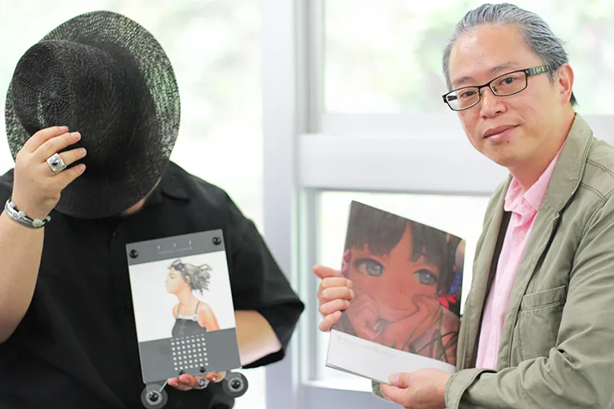
左：村田蓮爾「LAST EXILE」「青の6号」「ID-0」などのキャラクターデザインを担当したイラストレーター・デザイナー。第34回造本・装幀コンクール展にて、企画および責任編集を行ったフルカラーコミック誌『FLAT』が日本書籍出版協会理事長賞（コミック部門）を受賞。その他、さまざまな賞を受賞しており国内外で高い評価を得ている。最近では、衣服・バッグ・時計といったファッションの他、立体フィギュアの制作など、多彩な活動を展開している。2013年より、京都精華大学マンガ学部（キャラクターデザインコース）教員。また、コミックマーケットなどのイベントで、個人サークルより、同人誌を発表している。（サークル名：PASTA’S ESTAB.）
http://www.pseweb.com/
右：出口竜
本社工場勤務。入社二十云年。製本を経験してから印刷へ。
主に表紙多色刷を担当し、その後製版も学ぶ。
芸術大学や専門学校を卒業しても、なかなか思い通りにはならないクリエイターへの道。
成功しているクリエイター達は、一体どのようにして自身のキャリアを切り拓いてきたのでしょうか？
ホープトークでは、現役の第一線で活躍するクリエイターとその活動を影でサポートするホープツーワンの担当者にインタビュー。
記念すべき第一回は、「LAST EXILE」「青の6号」「ID-0」などのキャラクターデザインで知られ、セルフ・プロデュース作品でも国内外から高い評価を得ている、イラストレーター・デザイナーの村田蓮爾さんが登場。
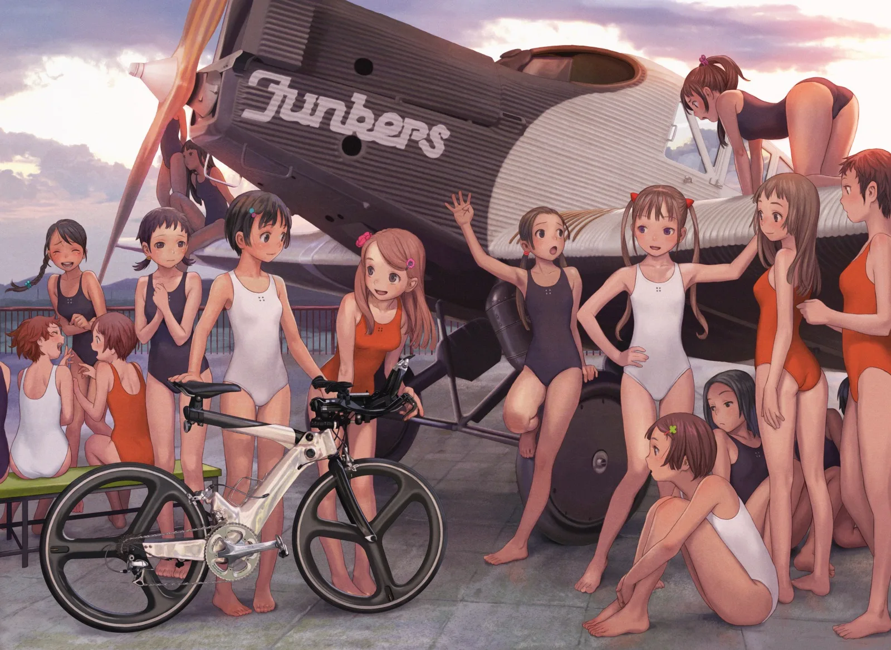
▲村田さんの過去の作品群
村田さんは、どのようにして職を得て、プロとして活動できるようになっていったのでしょうか？
また、出口は、作品作りの過程で村田さんをどのようにサポートしていたのか？
村田氏のこれまでの歩みを伺いながら、イラストレーターとして生きるための処世術について、村田さんが講師を務める、京都精華大学で伺いました。
目次
・独特の色彩とこだわりぬいたディティール
・ゲーム会社のアルバイトからからはじまったイラストレーターへの道
・「機能美と甘さ」が作り出す独自の世界観
・描き続けることが一番のキャリアパスに
独特の色彩とこだわりぬいたディティール
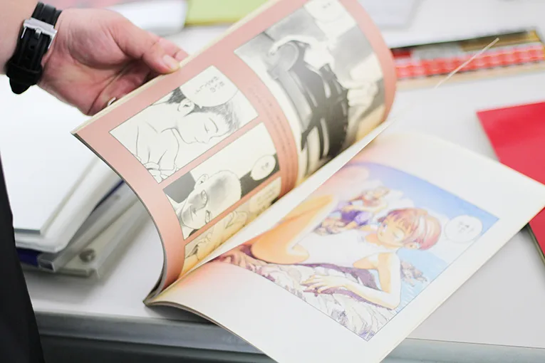
まず村田さんの作品の数々をご紹介。
機械的な研ぎ澄まされた美しい線とマンガやアニメ的な可愛くポップな表現の２つの軸が、村田さん独自の世界観を形成しています。
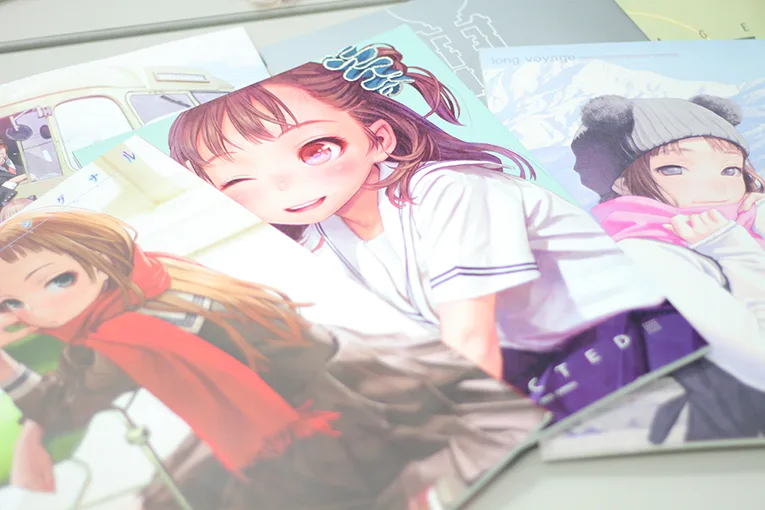
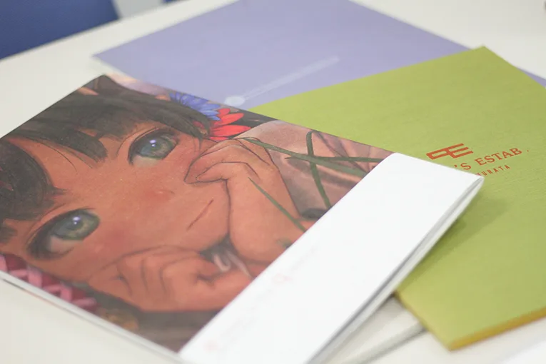
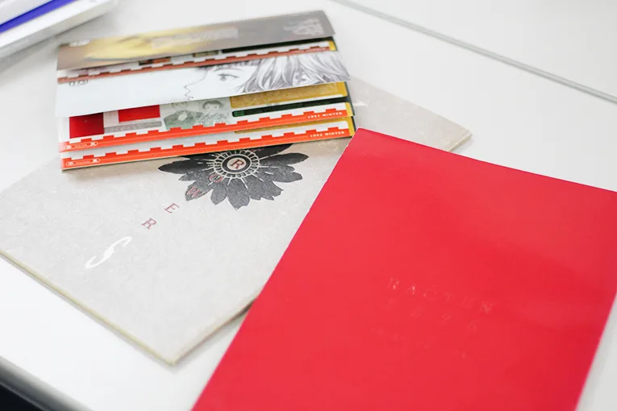
▲ホープツーワンが印刷を担当した、村田さんのセルフ・プロデュース作品。
イラストレーターとしての活動を主としながら、アクセサリー・衣装・グッズのデザインなど、自由な発想で自身の世界観を表現する村田さん。駆け出しの頃には、現在のようなキャリアを送っているとは想像もしていなかったとのこと。
村田さんは、どのような環境で、どのような仕事をこなしながらイラストレーターになっていったのでしょうか？続いて、素人時代からイラストレーターになるまで、村田さんのキャリアに関して伺いました。
ゲーム会社のアルバイトからからはじまったイラストレーターへの道
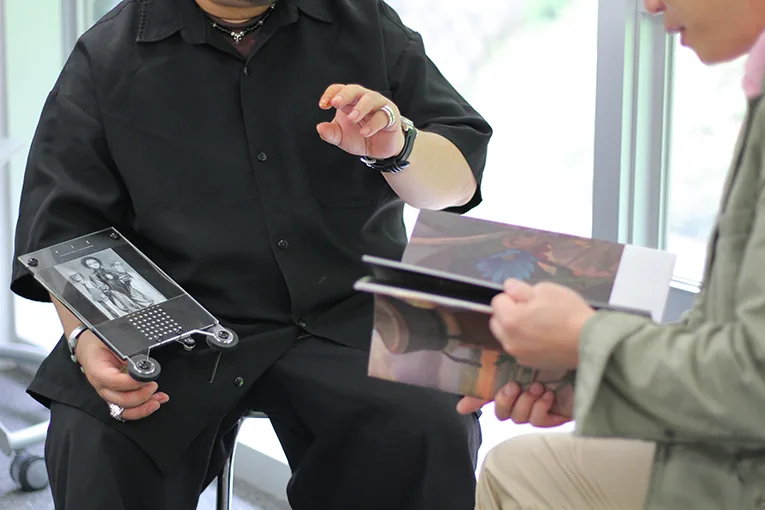
大学で工業デザインを学びつつ、マンガのようなイラストを趣味で描いていたという村田さん。
当時は、現在のイラストレーターのような仕事はほとんどなく、マンガのようなイラストを仕事にするには、マンガ家になるしか方法がなかったといいます。そんな村田さんがイラストレーターになったのは、友人が働いていたというゲーム会社にアルバイトとして入社したのがきっかけです。
「友人が働いていたゲーム会社にアルバイトで入社したのが、キャリアの第一歩でした。当初は、ゲームのグラフィック・ポスター・ゲーム雑誌用のイラストなど、ゲームに関連したパブリシティイラストを描いていました」
また、同時期に友人の誘いで同人誌の世界を知り、自身の世界観を強く打ち出したセルフ・プロデュース作品の作成もはじめたとのこと。
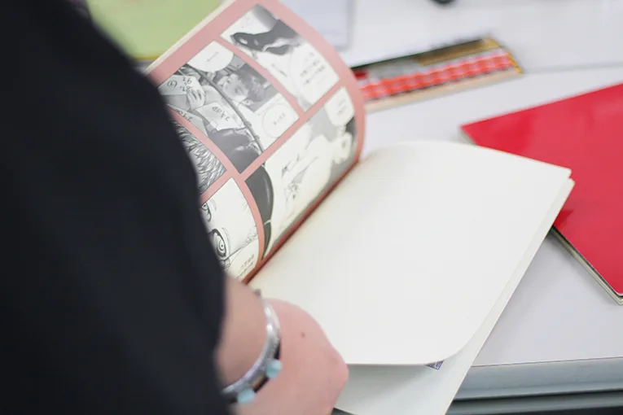
「同人誌のいいところは、自分のプロデュースで完結することです。スポンサーも自分だし、作るのも自分だし、内容のディレクションも自分だし、ブックデザインも含まれるし、全部自分できるのが気持ちよくて、アルバイトと並行してさまざまな作品を作りはじめました」
村田さんがはじめて同人誌を作成したときに、印刷を依頼したのがホープツーワン。印刷会社を探しているときにイベントでホープツーワンの存在を知り、とりあえずという感じでお願いしたのがはじまりだったといいます。それ以来、村田さんは20年以上にわたって、ホープツーワンに作品の印刷を依頼し続けています。
「ホープさんには本当にさまざまな相談をするんですが、『それはできない』って言われたことがほとんどないですよ。他のところだったら対応してくれないような依頼でも、実現するための方法を一緒に考えてくれるんです」
作家からのさまざまな依頼に全力で応えるのはなんでもできますをキャッチフレーズにするホープツーワンならでは。実現不可能に思える依頼でも、全力を尽くして対応すると担当の出口。
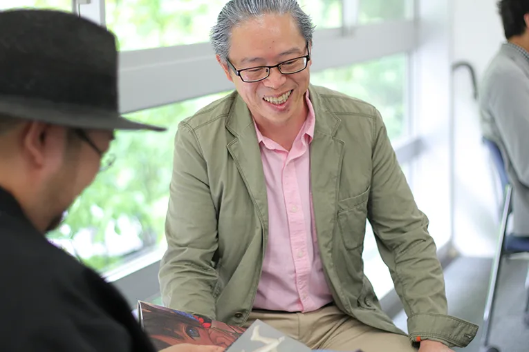
「村田さんの依頼の中でも一番驚いたのが、ゴムに印刷できないかとご依頼を受けた相談されたときですね。作品の一部にゴムの素材を使う部分があって、そのゴムの部分に文字を刷れないかという依頼相談でした。それまでにゴムへの印刷は行ったことがありませんでしたが、素材や印刷方法を工夫してオーダー通りの印刷が行えました。基本的に作家さんからの依頼は断らないのがうちのスタンスなんですが、村田さんとお仕事をする中で『どんな依頼でも対応できる』という自信をつけさせてもらったと思っています」
入社当初に村田さんの初期作品に触れて以来、現在に至るまで直接会うことはなかったという出口。緊張しつつも、初対面に内心は喜びと興奮でいっぱいだったといいます。
出口以外にもホープツーワンのさまざまな社員が村田さんとの仕事を通して、業務の幅を広げることができたとのこと。ホープツーワンの手厚いサポートを受けながら、村田さんは次々とこだわりが詰まった作品を作り上げていきました。
同人誌とは別に、ゲーム会社のアルバイトでは、格闘ゲーム「豪血寺一族シリーズ」のキャラクターデザインを担当。着実に実績を積み重ね、社内外で自身のイラストや作品の露出を増やしていきます。露出が増えるのに伴って、直接指名を受けて仕事をもらえるようになっていったといいます。
「雑誌の表紙を描いてほしいという話を２社からいただきました。アルバイトの業務と月刊誌の雑誌の表紙が２つ。社内外の仕事を同時にこなすことが難しくなってきたこともあり、独立することにしたんです」
独立したのは２４歳のとき。イラストレーターとしては少し遅めのデビューだといいます。独立後すぐに、村田さんのイラストや同人誌を見た雑誌の編集者などから複数の依頼があり、プロとして独立できる手応えがあったとのこと。
ゲーム会社でのアルバイトを皮切りに、先達がいない中、実績を積み重ねながらキャリアを自立で作り上げた村田さん。イラスタレーターになるための明確なみちしるべを持たないまま、絵の力によって自身のキャリアを切り拓きました。
「機能美と甘さ」が作り出す独自の世界観
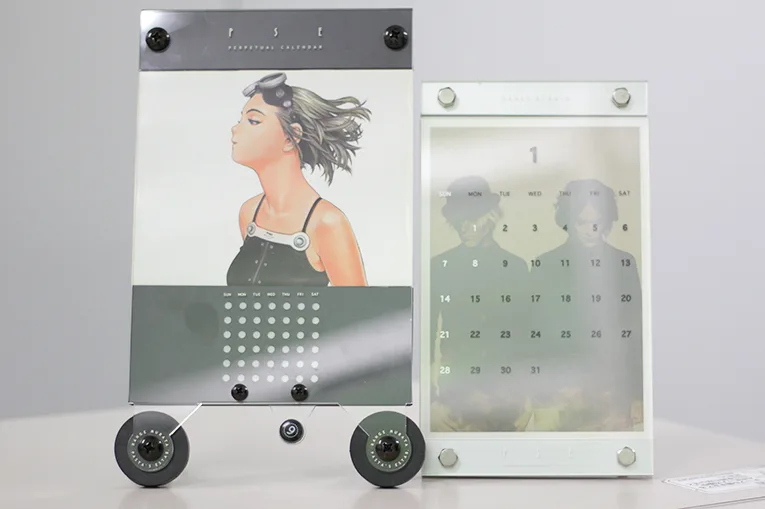
▲セルフ・プロデュースのカレンダー。イラストだけでなく、枠の素材やデザインまでプロデュース。
ゲーム会社のアルバイトから始まった村田さんのキャリア。数年でプロのイラストレーターまで上り詰めたのは、何よりも人を魅了して止まない絵の力があったからこそ。作品へのこだわりを伺うと、村田さんの作品の根底には、深い観察と洞察が潜んでいることがわかりました。
「古い機械を見たり、分解して構造を調べたりするのが昔から好きなんです。スクーターのブレーキペダルひとつを取っても、長さとか重さとか素材とか、すべての要素は意図があって作られています。強度であったり、踏みやすさであったり、さまざまな角度から考えてその形になっているんです」
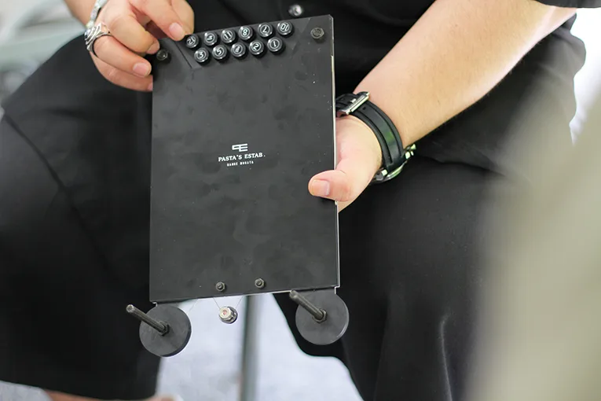
アンティークショップでさまざまな古い機械を購入しては、機械を分解したり、その機械が生まれた時代・文化・慣習を調べたりなぜこの形になったのか？を発見するのがたまらく好きだという村田さん。そんな機械に対する深く広い洞察は、村田さんの作品の細部にあらわれます。
「アンティークショップに行くと、何に使うかよくわからない機械が売っているんですが、ひとつひとつの機械の形状・構造には必ずそうなった理由があるんです。自分でもオリジナルの機械を描くんですが、強度や動力を考えながら、線のひとつひとつに意図や理由を持たせるように描いていますね」
しかし、機能美だけでガチガチに固めてしまうとつまらないと村田さん。イラストを描く際には、必ず隙や甘さをイラストに含ませるようにしているといいます。
「機能美でガチガチに固めてしまうと、見る人からするとハードルが高いように感じてしまうんです。キャラクターであったら、可愛さの部分であったり、機械や衣装であればあえて変な形にしてみたり、ワザとずらして隙や甘さを作ることで、人を惹き付けることができると考えています」
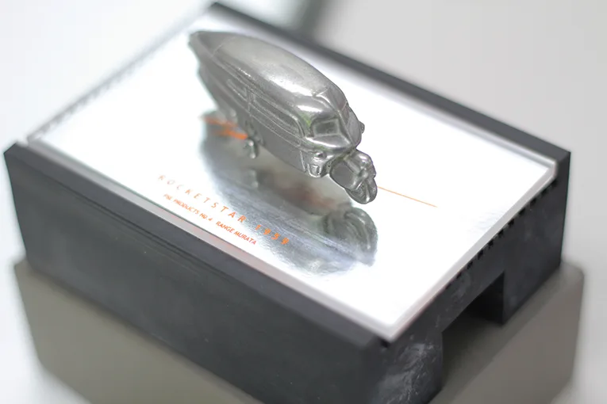
▲オリジナルデザインの二輪車。メタルの素材感が好きで、かつてはカーデザイナーに憧れたという村田さんらしい作品。こちらもホープツーワンが担当した作品。
洗練された機能美と隙や甘さ。
これらのバランスが、村田さん独自の世界観を作り出しているのです。
そんな村田さんの作品の魅力にいち早く気づいていたのは、デビュー当初から印刷を担当するホープツーワンの方々。現場担当の出口は、村田さんの依頼を受ける中で、仕上がった作品から独自性や凄みを感じていたといいます。
「紙でも特殊な質感や素材感のものなど、細部の細部までこだわりを持っているというのは仕上がりを見るたびに思いますね。ゴムへの印刷だったりメタルを使った二輪車の作品だったり、既成概念にとらわれない好奇心やチャレンジ精神の強さも他の人と違う部分ですね。入社当初の印刷担当としてはちょっと気後れするというか、最初に村田さんの作品を印刷するってなったときは、正直『僕がやっていいんですか』ってなりましたね（笑）」
長年にわたって村田さんの印刷に携わるホープツーワン。これまでの関係値があるからこそ、安心して仕事を依頼することができると村田さん。村田さんの独創的な作品の影には作家さんの依頼に全力で対応すると語る出口のようなサポーターの存在があるのです。ブックデザインや装丁の隅々にまで行き渡る、村田さんの世界観、それをなんとか実現しようとする印刷会社の努力。作品に対するこだわりと想いが交錯し、人を魅了する絵の力を生み出しています。
描き続けることが一番のキャリアパスに
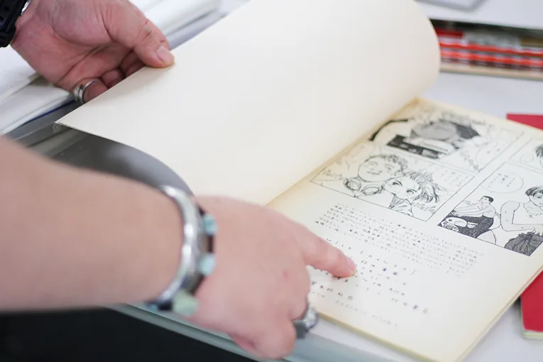
美しい線と独特の色彩、衣装や小物の細部にこだわり、どこかレトロな趣を持つ村田さんの作品。
このような独自のスタイルは、とにかく描き続けることで自然にたどり着いたと村田さん。プロとして活躍するイラストレーター・クリエイターになるためには、どのような部分に注意すればよいのでしょうか？
「見たものを正確に平面に落とし込むデッサンと趣味で描いていたマンガ的な線画の２種類を描いていて、それぞれ別物だと思っていたんです。同じ絵なのにバラバラに描くのも変だなって考えたことがあって、それぞれの要素を混ぜて描くようになったのが今のスタイルになるきっかけでした」
趣味でも仕事でも、描き続ける中でみつけた自分の方法論が、他の人には出せない自分の強みになると村田さん。だからこそ、プロのイラストレーターやクリエイターを目指すには、とにかく描き続けることが大切だといいます。
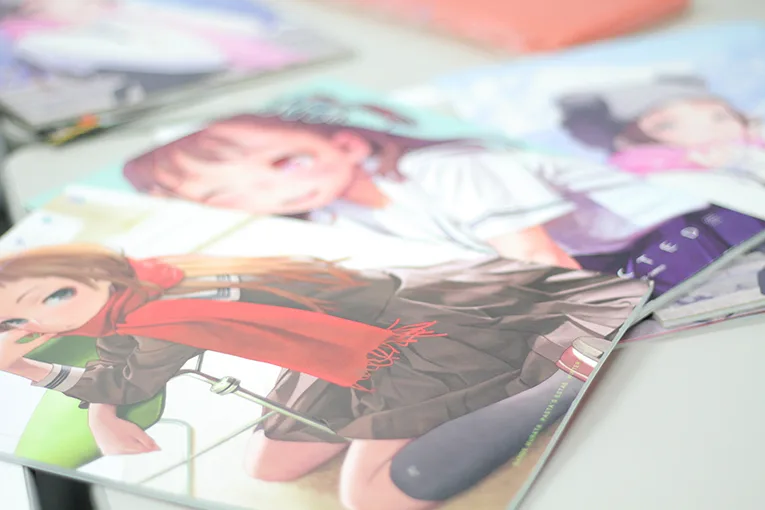
「描き続ける中で、自分の強みや弱みがわかりますし、自分がどういう絵を描きたいのかもわかってきます。後は、絵を描いていて楽しい、おもしろいという想いを忘れないこと。どんなときでも楽しみながら、人より１本でも多くの線を描き続けることが、プロへの一番の近道だと考えています」
絵を描き続けることができれば、キャリアはおのずとひらけてくると村田さん。
まずは描き続けること、そしてアルバイトでもなんでも、描き続けるための環境を作ること、地道な一歩一歩が、村田さんの作品のような、その人にしか出せない絵の力を形成します。
そして、どんなときでも決して忘れてはいけないのが描くことを楽しむこと。自身が描く絵、作る作品、そのすべてが輝かしい未来につながっていると信じて、キャンバスにペンを走らせましょう。
※取材協力
京都精華大学 http://www.kyoto-seika.ac.jp/
村田蓮爾さんは現在、イラストレーターとしてご活躍されながら2013年から京都精華大学マンガ学部「キャラクターデザインコース」の教員も務めていらっしゃいます。
今回村田さんの働きかけと京都精華大学様のご厚意により対談撮影場所をご提供いただきました。
心より感謝申し上げます。
村田蓮爾先生
「LAST EXILE」「青の6号」「ID-0」などのキャラクターデザインを担当したイラストレーター・デザイナー。第34回造本・装幀コンクール展にて、企画および責任編集を行ったフルカラーコミック誌『FLAT』が日本書籍出版協会理事長賞（コミック部門）を受賞。その他、さまざまな賞を受賞しており国内外で高い評価を得ている。最近では、衣服・バッグ・時計といったファッションの他、立体フィギュアの制作など、多彩な活動を展開している。2013年より、京都精華大学マンガ学部（キャラクターデザインコース）教員。また、コミックマーケットなどのイベントで、個人サークルより、同人誌を発表している。（サークル名：PASTA'S ESTAB.）